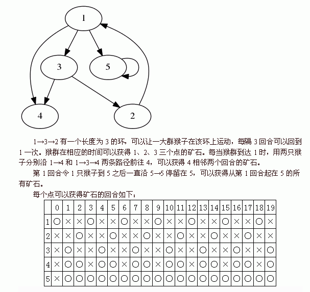

标准输入。输入第一行包含四个正整数n,m,S,T，分别表示有向图中点的个数，边的个数，开始出产的时间和结束出产的时间。
接下来m行，每行包含2个1到n的整数x,y，用空格隔开，表示有一条从第x个点到第y个点的有向边。
cxm最近在玩一个叫做猴子挖矿的游戏。
这个游戏由两个玩家参加。开始时地图中会随机生成一些矿点，玩家需要操作自己的猴子探索未知的道路，抢占对方的矿点。已经占领的矿点每回合会产生1单位的矿石。玩家用手中的矿石可以购买路灯、护盾、传送等道具。最终获得矿石较多的玩家获胜。
cxm对这个游戏进行了一些改动。现在游戏在一个有n个点，m条边的有向图上进行，为了方便起见，cxm用1到n的整数来表示地图中的点。
玩家只有一个，但他拥有无限数量的猴子。游戏最开始时，所有的猴子都在第1个点。每一回合，所有的猴子必须沿着图中的一条有向边移动到下一个点。玩家可以给不同的猴子指定不同的路线，但不能让猴子呆在原地不动。无路可走的猴子会在下一回合消失。
游戏开始时为第0回合。从第S回合开始，到第T回合结束（包括第S回合和T回合），每回合每个点都会出产1单位的矿石。如果在该回合玩家有至少一只猴子在出产矿石的点，那么玩家将获得这个矿石，否则这个矿石会在下一回合消失。
现在cxm想知道，在图中的每个点他分别最多可以获得多少个矿石。
标准输入。输入第一行包含四个正整数n,m,S,T，分别表示有向图中点的个数，边的个数，开始出产的时间和结束出产的时间。
接下来m行，每行包含2个1到n的整数x,y，用空格隔开，表示有一条从第x个点到第y个点的有向边。
标准输出。输出n行，每行包含一个整数，按照1到n的顺序依次表示在每个点可以获得的矿石个数。
5 7 0 19
1 3
1 4
1 5
3 2
2 1
3 4
5 5
7
6
7
13
19

对于100%的数据，保证0<n≤100，0<m≤300，0≤S≤T≤1015。